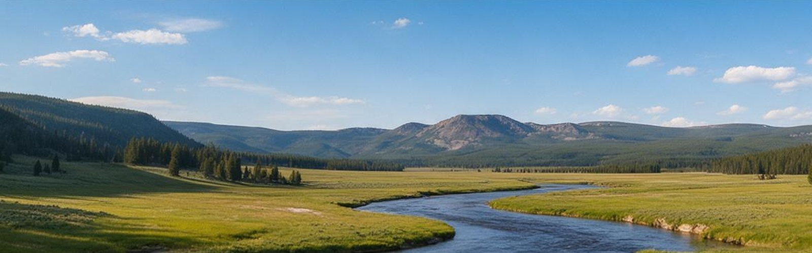
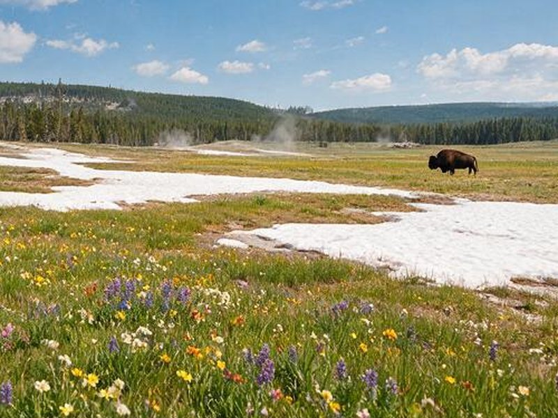
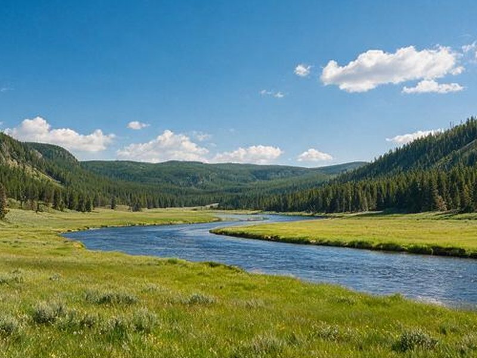
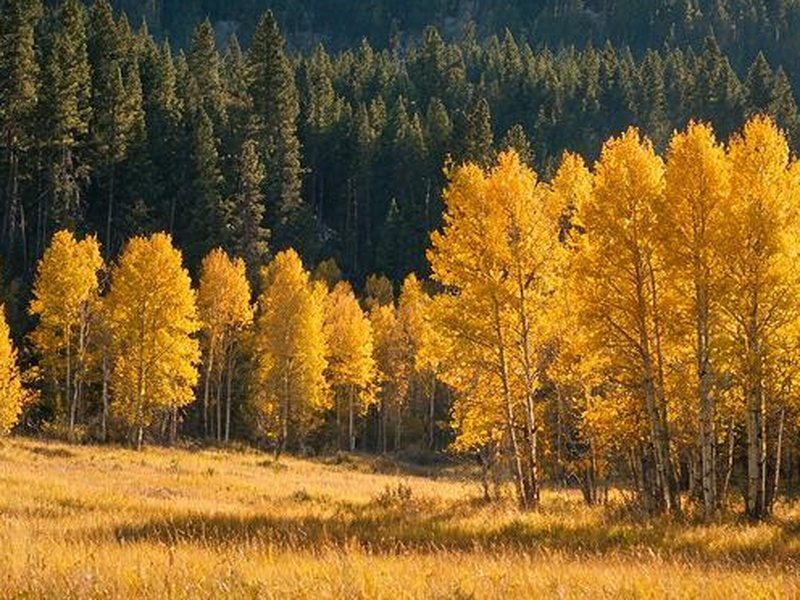
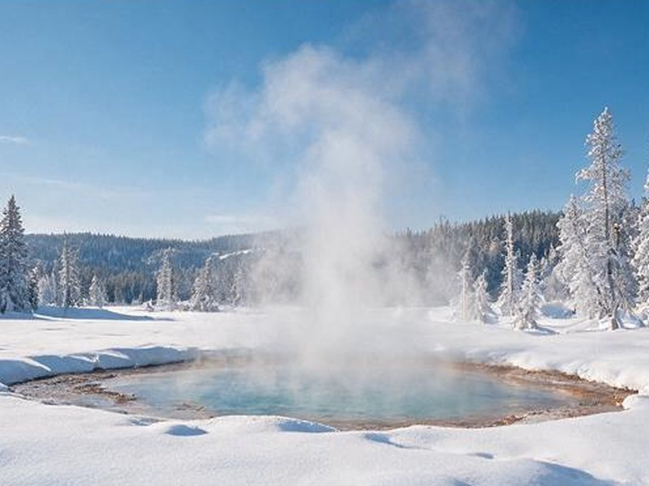

When to visit Yellowstone
The park changes completely from season to season. Road access, wildlife, and crowds all follow the calendar.

Spring
April to May
Roads reopen in stages as plows clear the snow, and the first calves of bison and elk appear. Bears come out of their dens. It is quiet and wildlife-rich, but weather can swing from sun to snow in a day, and some roads and services stay closed.
- Best for: baby animals, bears on open slopes, thin crowds
- Watch for: late snowstorms, closed roads, and limited services

Summer
June to August
Every road and service is open, and the days are long. This is also the busiest time, with full lodges, crowded boardwalks, and slow traffic around wildlife. Start early, and book lodging well ahead.
- Best for: geyser basins, hiking, and the full road network
- Watch for: crowds, traffic jams, afternoon thunderstorms, and wildfire smoke

Fall
September to October
Crowds thin, mornings turn crisp, and elk are in rut, with bugling bulls in the Mammoth and Madison areas. Early snow can close higher roads, and some services shut in late September.
- Best for: wildlife and photography with fewer people
- Watch for: cold nights and early road closures

Winter
November to March
Most roads close to regular cars, and the park becomes a quiet, snowy landscape. Visitors travel by guided snowcoach or snowmobile to Old Faithful and other areas, and drive the north road to Lamar Valley for wolves and bison against the snow. Temperatures often fall well below freezing.
- Best for: wolf watching, steam over snow, solitude
- Watch for: extreme cold, limited lodging, and the need to book transport early
Road dates change every year. Opening and closing dates depend on snow and plowing. Check the park's road status page before you plan a trip, especially in spring and fall.
Not sure which dates to pick?
Tell us when you can travel and what you want to do. We can point you toward the right season and the lodging or tour providers that fit.
Get help choosing dates